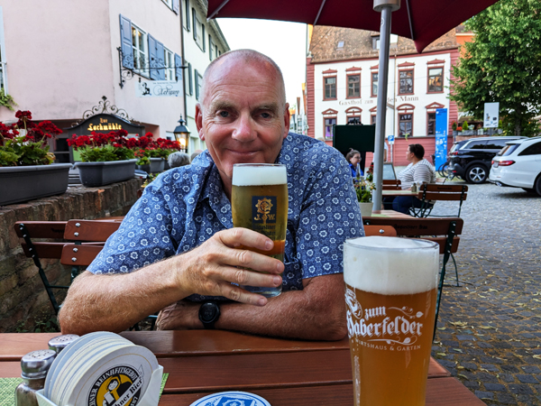
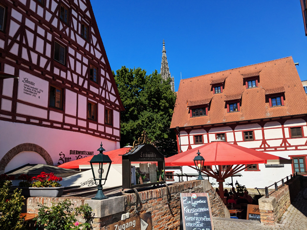
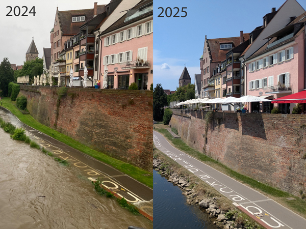
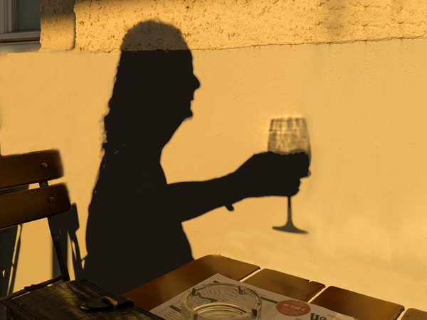
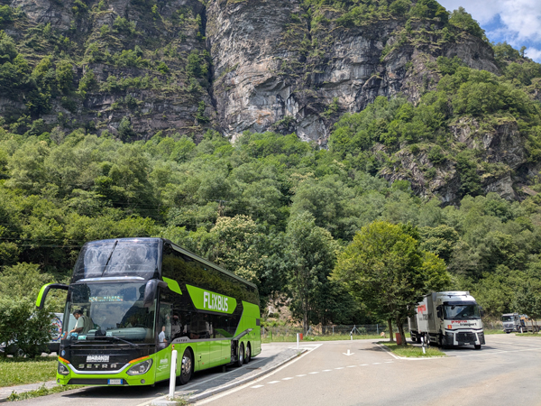
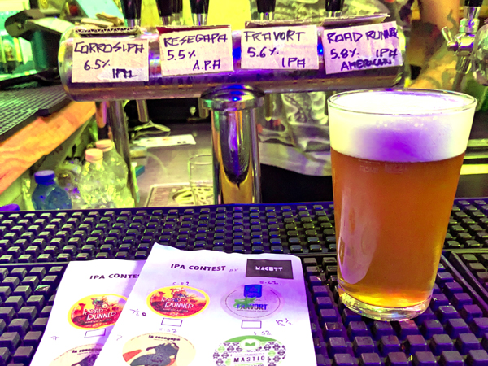
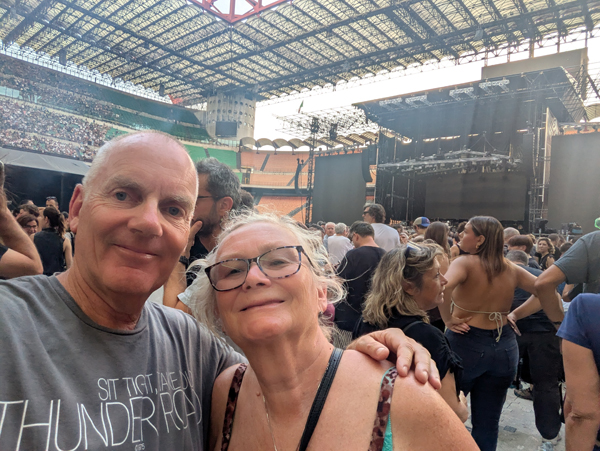
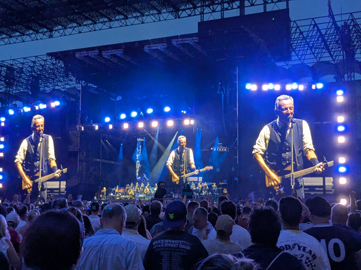
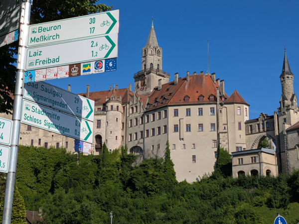
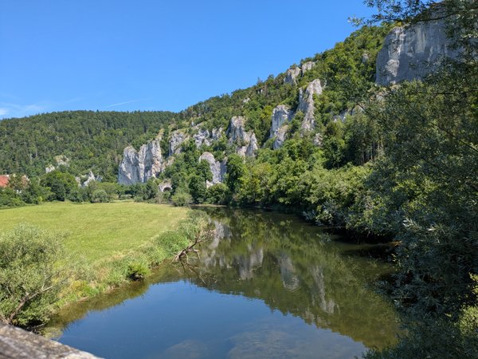

Sunday 29th June We were up by about 8:30 and had loaded up the car and left the apartment by 10:00. We had a drive of about six hours today and the lack of alcohol after the game last night certainly made the day a lot easier. We followed the route back that we had driven along a couple of weeks ago until we left the Munich ring road and headed slightly further North towards Ulm. We had a stop for petrol and to buy our Austrian vignette before we left Bratislava, a couple of toilet stops and one more for lunch. We arrived at the Ulm Ibis at about 5pm.
We checked in and put our stuff in the room. There is no air-conditioning in this Ibis, something we were not expecting. The outside temperature was still around 32°c so the room was a bit warm but we will probably cope for a couple of days. We went straight out for a walk around the town. After walking past the cathedral, the rathaus and the wobbly hotel, we found Erstes Ulmer Pfannkuchenhaus a place we had drank in the last time we were here. Then, the food had looked very good so we booked a table for 7:30 and returned to the hotel for showers.

The Pfannkuchenhaus was excellent. It was a nice place to sit with good beer and the pancakes were excellent. As well as sweet pancakes, they did savoury ones with things like pork and mushroom sauce and turkey gyros. The food was lovely and it was a very enjoyable meal. We then found a place we had not been to before, an Augustiner bar called Haberfelder im Ulmer Wirtshaus. This was another very good bar. We had a couple more drinks in there before walking back to the hotel.
Monday 30th June An early start today as we wanted to get out on our bikes before it got too hot. We left the hotel at 7:45, bought breakfast in town and ate it by the river before heading out along the Donauradweg again. There was one bit of this section of the route that Roz had yet to complete - About ten miles of the path leading into Ehingen.
We got within a couple of miles of Ehingen before having to go up the biggest hill we have had to climb on this trip so far. At the top we missed a sign which meant us going back down the same hill on a parallel road. This was not good news as it was hot again and the hill had been tough. Roz nearly gave up at this point but we both made it back to the top and then had an easy ride down into the centre of town. Section completed!
We spent about 30 minutes in Ehingen. I cycled to ReWe to get cold drinks and we sat in the square recovering from the hill(s). From Ehingen we had a 21km ride to Blaubeuren. This was fairly straight-forward and we got to Blaubeuren by about 1pm. We cycled straight up to the Blautopf. We had visited this large spring a year ago but it was not as blue as it should be due to the amount of heavy rain we had had. We decided to visit it again.
This time, it was much bluer but was slightly spoilt by the building work going on around it. The whole area will be very nice when finished but that did not help us much today. It was still a very nice sight and it was still possible to get some good views of it.

At this point we split up. Roz got the train back to Ulm while I cycled another 21km to complete the triangle. We both arrived back at the hotel at about the same time. After showers, we went out for lunch. In the absence of a Backwerk in Ulm, we went to the Back-Factory which was fairly similar. We went for a bit of a walk around again before returning to the hotel.
At 6 we went out for a few drinks. We started at Stella Café + Bar. The bar itself was nothing special but it had nice seats outside and served cheap Augustiner beer. We had one each at the Cafe Extrablatt in the main square overlooking the cathedral and then went down to Gaststuben im Zunfthaus der Schiffleute in the Fischerviertel. After a couple in there we returned to the Barfüßer Hausbrauerei for a few more beers and a couple of flammkuchen. We were back in the hotel by 10:30 and had our welcome drink in the bar before going to bed.
Tuesday 1st July When we woke up we walked into the centre and bought breakfast which we ate sat looking at the cathedral again. We returned to the room and packed up our stuff. We checked out of the hotel at 11:00, left the car in the car park and went out on our bikes again.
We headed East on the Donauradweg. Just over a year ago, a lot of this path was closed due to the high water level of the river. It all looked a lot different today!

We cycled about 12 miles before turning round and coming back the same way. We loaded the bikes on the car and had a drive of about 61 miles to Böblingen. As with last year, we are staying in Böblingen as there is a cheap bus from there to Milan. We arrived in Böblingen at 16:25 and easily found the B&B hotel that we had stayed in last year.
When we checked in, we asked about leaving the car in the car-park until we after we return from Milan. We were initially told this was not possible so we went out and had a look around for other options. By the time we got back, the receptionist had spoken to his manager and told us it was OK. This makes our lives a lot easier.
We spent the next hour or so sat in the room in the air-conditioning. We never really established if the air-con at the Ibis in Ulm was not working or if the room did not have air-con at all but either way, the room was very hot. It felt very good to be cold again.

I went out for a walk at 7 to complete my steps for the day. I was back at the hotel by 7:30 and we went over the road to the Wichtel Hausbrauerei. We had a few rounds of drinks and a couple of pizzas before returning to the hotel for an early night.
Wednesday 2nd July We were up by 6, had showers and put the luggage that we don't need for the next couple of days in the back of the car. We walked through the station, bought food for breakfast and went to wait at the FlixBus bus stop. The bus turned up a couple of minutes late. As with last year, we had paid extra for the panoramic seats so were in the front row of the upper deck again.

The journey was very enjoyable again. We could have done with the air-con being a bit more powerful and the windscreen being a bit cleaner but the scenery all looked a lot better than it did last year as the weather was so much better. Last year we did the journey on a Sunday. Today it was a lot slower getting in and out of Zürich but the roads through The Alps were emptier so overall it was a slightly quicker journey. We arrived at the Lampugnano bus station in Milan 10 minutes early at 15:20.
We got straight onto a Metro to Lima station and walked to the Hotel Ibis Milano Centro. We checked in and were in our room by about 16:30.
We had showers and went out an hour later. The area of Milan is quite good for craft beer bars. We walked first to Bierfabrik, a bar we had visited last year and then to Birrifico a new place for us. Both of these places were OK but the next bar - Magutt Beer Shop - was excellent. They were having an "IPA contest" which involved paying €10 each to try four different IPAs and then voting for your favourite. Normally this sort of beer tasting works out more expensive but these were by far the cheapest drinks of the evening. We had only planned on having one in there but got through the four before moving on.

By this time we needed to eat. We returned to Nàpiz' Milano, an excellent pizzeria that we had visited last year. It was every bit as good this time round. We had two pizzas as well as a bottle of wine before having our final drinks of the night at Birra di Quartiere. Just like last year, all their beers are the same price which just about forced us into having the 8.2% Double IPA. After two of these each, it was time to walk back to the hotel which was just round the corner.
Thursday 3rd July - Springsteen at The San Siro We left the hotel at 10:30 and went out for breakfast. We returned to a place near the center for sandwiches and then had a wander round a few of the sights. We walked back via the hotel that Bruce Springsteen is apparently staying at. There were plenty of people stood around hoping to see him but we got bored after a minute or two and went to get ice-creams instead. We were back in the room just before 1pm.
At 2:45 we went down to the bar and had our welcome drink. We had decided that before the concert we would go and have a couple of drinks and something to eat in the canal area, somewhere we had not been before. It should have been quite easy to get there as there is a tram directly from just outside the hotel to Arco di Porta Ticinese. We got straight on the tram but about a mile from where we were trying to get to, there was a broken down car on the tram line so the tram could go no further.
We eventually got off, started walking and went for a drink in the first bar we came to. By this time, we decided that we should abandon the plan of going to the canal area and start getting a bit closer to the ground. We walked to a metro station and got a couple of trains out to Lotto. In the first bar we went into there, we made the mistake of ordering a couple of beers. Not very nice and very overpriced - a reminder of what drinking beer in Italy used to be like before all the craft beer bars started appearing. The next place we found only served wine in plastic glasses so we moved on. We eventually found Genzianella which served reasonably priced wine and quite tasty sandwich type things. We had three rounds of drinks in there before walking to the ground.

We got in using the tickets we had from last year without any problems. All a bit easier than trying to get in when we were here to watch England! We had standing tickets and had reasonable views of the stage. The concert was excellent again and it was a very good crowd tonight. As always, there were a few tracks that would have changed given the choice but overall it was not a bad set list.

We stayed until the end and then walked back to Lotto. We had a wait of about 10 minutes for the metro but then got on a train that took us to within 5 minutes walk of the hotel. Got back just after midnight.
Friday 4th July I got up at 7 and went out for a walk as it was the only chance I would get today to do my steps. After getting back and showering, we left the hotel at 9:00. We bought food for todays journey and walked to the Metro station where we got a train back to the bus station. We were there by about 10:00 so had an hour to wait for the bus back to Böblingen. The bus turned up at about 10:50 and left on time at 11:00.
The journey today was OK again. We were on a single decker bus so the views were not quite as good but we were at the front behind the driver so it was still worth paying for the panoramic seats. The journey was supposed to be 45 minutes quicker going this way but there was a 30 minute delay going through one of the tunnels and very heavy traffic going through the centre of Zürich. We eventually got back into Böblingen 50 minutes late at 19:20. Once again, the journey of more than eight hours had gone relatively quickly.
We checked back into the B&B and after a bit of confusion over a free breakfast voucher, were given a free night's car parking instead. We dropped our bags in the room and went straight out to eat. Roz was keener on McDonalds than the brewery. The one by the station closed at 8 so we walked out to another one about 10 minutes away. We were back in the room by 9. Tomorrow we will start using the trains for the first time on this trip so we both bought our Deutschland tickets. I caught up with some work for Limbcare while Roz watched Wimbledon but otherwise a quiet night.
Saturday 5th July We checked out of the room just before 8:00, put our stuff in the car and went to the bakery by the station for breakfast. We started driving out of Böblingen at 8:15. We had a drive of 64 miles today to get to Sigmaringen. It was another uneventful journey and we arrived at Hotel Gästehaus Pfefferle, the same place we had stayed last year. Last year, we had attempted to complete the German part of the Donauradweg but for one reason or another had missed a couple of sections at the start of the river. We had come back to complete it.
Today we planned to cycle between Fridingen and Sigmaringen (about 27 miles), a section that got abandoned last year due to torrential rain. The plan was to get the train to Fridingen and cycle back. We were not able to check in to our apartment when we arrived but we got into our cycling gear, left the car in the car park and headed off to the station. We got to the station at about 10:00 and planned to get the 10:34 train. The train was starting in Sigmaringen and came in at 10:15. There was a very helpful and chatty member of staff on the platform who made sure we were on the right train and that our bikes were secure.
About two minutes before departure time, the driver turned off the engine and wandered off. The member of staff explained that there was a broken down train further up the track and we would not be leaving on time, if at all. We stayed on the train until 11:00 before giving up and decided instead to cycle to Fridingen and get the train back. The whole thing bought back a lot of memories of how bad the German trains were last summer. Not much seems to have changed.

Once we started cycling, things improved. We had done a bit of this section before but everything looked a lot better without the rain. There were a few hills along the route and a lot of the paths were not surfaced but it was all still easy enough and the scenery along the way was spectacular. It is one of the nicest parts of the German route, if not the whole route with plenty of castles and buildings on hills to look at. Although we had seen some of this bit before, it is still amazing seeing the size of the river compared to where we have seen it in the last couple of weeks.

After about 12 miles, Roz changed the plan. She cycled to Beuron which completed the bit we were missing. I went on ahead and cycled to Fridingen to buy stuff for lunch (also completing the missing bit). I caught her up on my way back and we had lunch in Beuron before cycling back to Sigmaringen. The route continued to be spectacular with steep banks on one side and plenty of small bridges as the cycle path kept crossing the winding river. We now both just need the Donaueschingen to Fridingen section to complete the route.
Back in Sigmaringen, we bought food for tonight from Aldi and returned to the apartments to check in. It was not the same apartment as last year but was equally large with more space than we could possibly need. I went straight out for a walk around the town and met Roz who came out about 30 minutes later. We walked back to the apartment and had another quiet night.